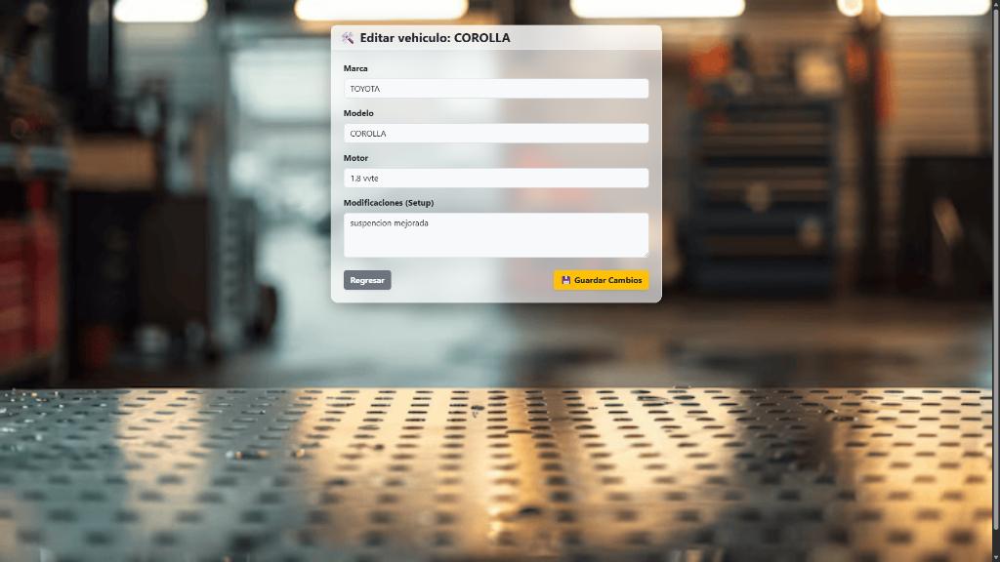
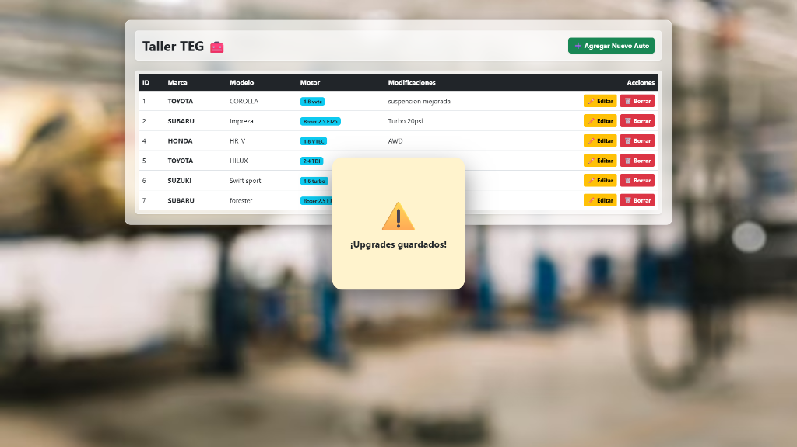
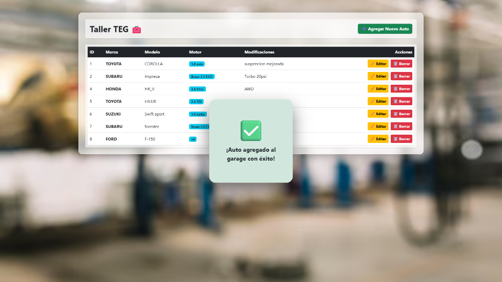

Sistema CRUD
Un sistema CRUD (Create, Read, Update, Delete) desarrollado para la gestión de vehículos en un taller mecánico (Taller TEG). Construido con Laravel y PHP, presenta una interfaz limpia y animaciones fluidas para operaciones como registro de nuevos vehículos, edición de modificaciones y confirmaciones visuales de éxito.




# Stack_Tecnológico
PHP
Laravel
MySQL
HTML5
Tailwind CSS